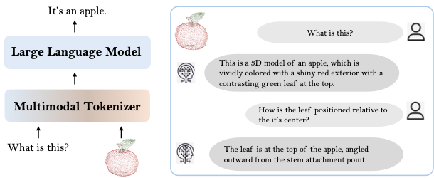
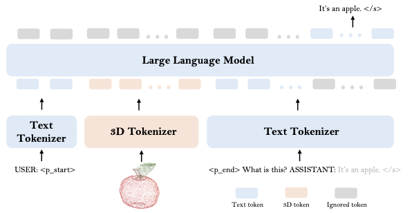
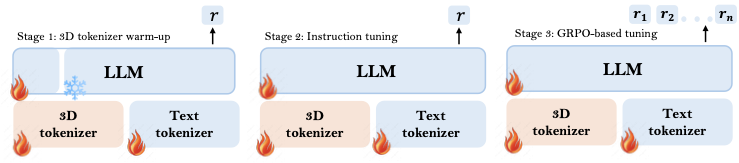
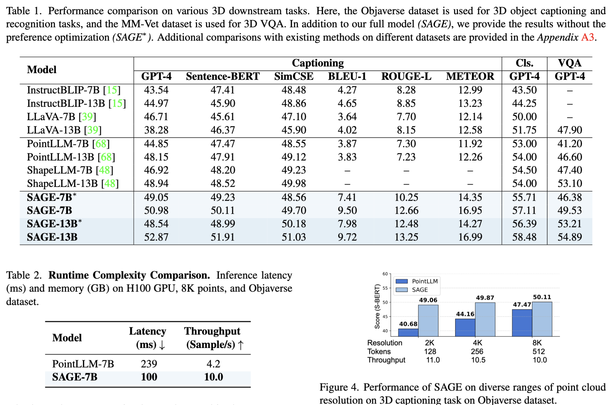

Multi-modal large language models (MLLMs) have shown remarkable progress in integrating visual and linguistic understanding. Recent efforts have extended these capabilities to 3D understanding through encoder-based architectures that rely on pre-trained 3D encoders to extract geometric features. However, such approaches suffer from semantic misalignment between geometric and linguistic spaces, resolution sensitivity, and substantial computational overhead.
In this work, we present SAGE, the first end-to-end 3D MLLM that directly processes raw point clouds without relying on a pre-trained 3D encoder. Our approach introduces a lightweight 3D tokenizer that combines geometric sampling and neighbourhood aggregation with vector quantization to convert point clouds into discrete tokens — treating 3D data as a foreign language that naturally extends the LLM's vocabulary.
Furthermore, to enhance the model's reasoning capability on complex 3D tasks, we propose a preference optimization training strategy with a semantic alignment–based reward, specifically designed for open-ended 3D question answering where responses are descriptive. Extensive experiments across diverse 3D understanding benchmarks demonstrate that our end-to-end approach outperforms existing encoder-based methods while offering significant advantages in computational efficiency, generalization across LLM backbones, and robustness to input resolution variations.
SAGE treats a point cloud as a foreign language. A lightweight, trainable tokenizer projects raw point clouds into the LLM's input space via three steps:


SAGE is evaluated across diverse 3D understanding benchmarks including captioning and question answering. We report two variants:
Both variants outperform existing encoder-based 3D MLLMs while offering substantial efficiency gains. See the paper for full quantitative comparisons.

@article{paul2025sage,
title = {Point Cloud as a Foreign Language for Multi-modal Large Language Model},
author = {Paul, Sneha and Patterson, Zachary and Bouguila, Nizar},
journal = {arXiv preprint},
year = {2025}
}